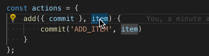
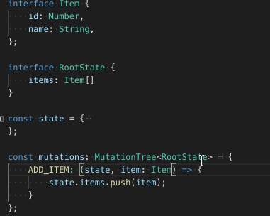
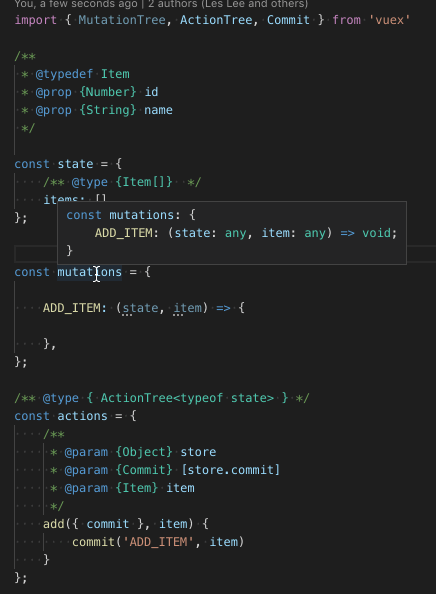

# [Vuex] 在 Vscode 中不使用 Typescript 也能讓 Vuex 讀懂變數的類型
# JsDoc 是一個好東西，每個 Javascript 從業者多少都該了解一二
由於 Javascript 的活潑語法特性，變數的型別是難以追蹤的。
我們平常在撰寫 Javascript 時最常碰到的類型應該就是 any 了吧！

Typescript，作為一個 Javascript 的 Super Set ，其最大的特色與優勢便是能夠為 Javascript 添加靜態型別與物件類型。
若是上述的 Vuex Actions 為 Typescript 撰寫的話，會發生什麼事呢？

我們可以為程式碼增加 型別 ，並且 Vscode 會自動識別此變數的型別。就像上圖一般。
然而，倘若我們的專案並非 Typescript 專案，卻也想要享受等同的優點該怎麼辦？(畢竟頭已經洗下去了，不是說改就能改的。)
幸運的是我們能夠使用 JsDoc 達到相同的效果。
直接以下圖 gif 為例：

Vuex 本身提供了諸如 MutationTree , ActionTree … 這類的 Interface ，使得我們可以利用 jsDoc 在 mutations , actions 進行註解。好讓 Vscode 得以解析變數的類型。
# 總結
本文中展示了如何利用 JsDoc 讓 Vuex 在 Javascript 專案中猶如在 Typescript 專案一般，也能顯示變數類型的方法。
對於一個穩健的專案而言，若能於撰寫程式時便一目瞭然其變數的類型與資料結構，絕對擁有莫大的幫助。
在開發 Javascript 專案時，我總是會盡可能地將各個變數與方法都寫清楚 JsDoc 格式的註解 ，其好處便是在開發時可以使人一眼掌握每個函式、變數、物件的資料結構與型別。
如此也能有效地 降低因為型別偏差或是資料結構錯誤導致的錯誤 。